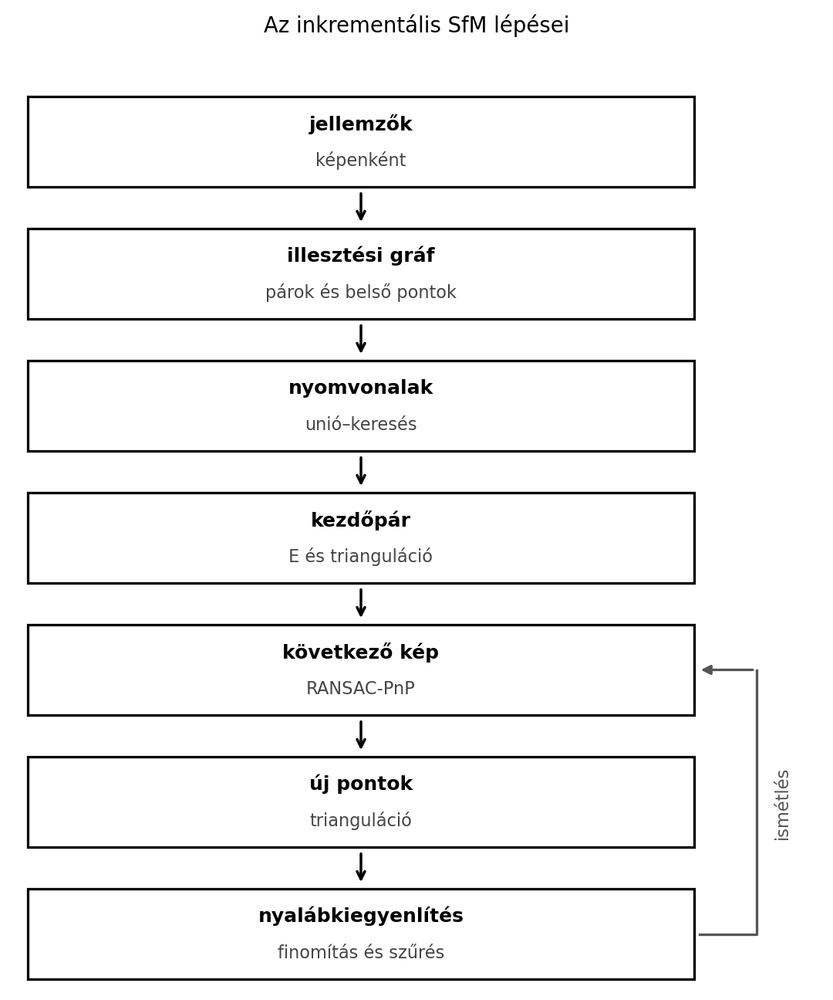
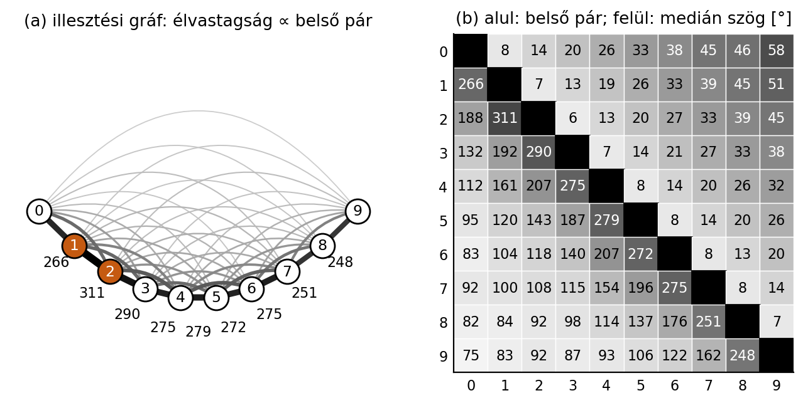
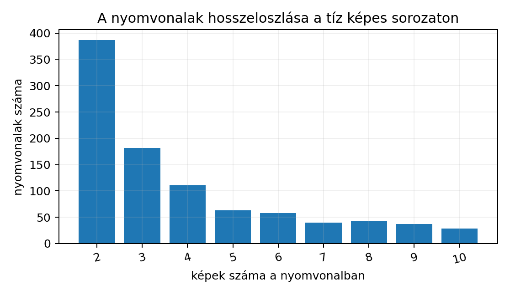

Eddig két képpel dolgoztunk (Esszenciális mátrix, 5-pontos algoritmus és a póz kinyerése, Trianguláció), majd egy harmadik kamerát illesztettünk ismert pontokhoz (PnP: kamerapóz ismert 3D pontokból). Most legyen tíz kép a futó jelenet asztaláról, ismeretlen pózokkal. Mit tudunk rekonstruálni? Egyszerre a kamerapályát és a jelenet ritka 3D pontfelhőjét. Ez a struktúra mozgásból (structure from motion, SfM). A legelterjedtebb változata inkrementális: két képből induló magot növeszt, képenként. Így működik például a COLMAP is [S-COLMAP]; mi egy kis, átlátható változatot építünk a korábbi fejezetek elemeiből.
Gondolj egy kirakóra: először két jól illeszkedő darabot teszel össze, aztán mindig azt a darabot veszed, amelyik a legtöbb helyen kapcsolódik a már meglévőkhöz. Az SfM ugyanígy halad:

A következő animáció a tíz képes sorozaton mutatja a folyamatot. Egy képkocka egy lépés: lilával az új kamera, naranccsal az új pontok; a kis diagram a visszavetítési hibát mutatja nyalábkiegyenlítéssel és anélkül.
Definíció. Az illesztési gráf (view graph) csúcsai a képek; két csúcs között akkor van él, ha a képpár geometriailag igazolt megfeleltetésekkel rendelkezik.
Az él előállítása a korábbi lépések egymásutánja: arányteszt-szűrt leíróillesztés (Leírók illesztése: távolságok, arányteszt és közelítő keresés), majd 5 pontos RANSAC az mátrixra; az él csak akkor marad meg, ha elég belső pár van (itt legalább 20). Az élhez eltároljuk a belső párokat, a relatív pózt (), a medián háromszögelési szöget és azt is, hány belső pár magyarázható egyetlen homográfiával ().

Minden képpár között van él, de nagyon különböző minőségű: a szomszédok – belső párt adnak –-os szöggel, a sorozat két vége csak -öt, viszont -kal. Ez a szokásos kompromisszum: a közeli nézetpárok sok, de kis parallaxisú, a távoliak kevés, de erős geometriájú megfeleltetést adnak.
Az összes képpár vizsgálata
képre
illesztés:
képnél
,
ezernél már félmillió. A nagy rendszerek ezért előbb képkereső
módszerrel (vagy videónál időablakkal, a match_graph
window paraméterével) választják ki a vizsgálandó párokat,
és csak ezekre futtatják az illesztést.
Definíció. Nyomvonal (track): egyetlen fizikai pont megfigyelései több képen, halmaz, képenként legfeljebb egy elemmel.
A hosszú nyomvonal azért értékes, mert ugyanazt a pontot sok kamerához köti, és így a kamerákat egymáshoz is: ez tartja egyben a rekonstrukciót.
A nyomvonalak a gráf éleinek párjaiból a tranzitivitással adódnak: ha az kép 1. jellemzője párja a kép 2. jellemzőjének, az pedig a kép 5. jellemzőjének, akkor a három egy pont. Ez gráf összefüggő komponenseinek keresése, amelyet unió–keresés (union–find) adatszerkezettel végzünk, ahogy a Küszöbölés, morfológia és összefüggő komponensek címkézésénél. Ha egy komponensbe ugyanabból a képből két jellemző kerül, valahol hibás pár van; az ilyen ellentmondó nyomvonalat eldobjuk. A futó sorozaton nyomvonal keletkezik ( ellentmondó kiesik), a leghosszabbak mind a tíz képen látszanak. A többség rövid:

Az egész rekonstrukció a kezdőpár keretében épül, és a rossz kezdés később alig javítható. A jó pár:
A sfm.select_initial_pair a feltételeket teljesítő élek
közül a legtöbb belső pontút választja; itt ez az
pár
(
belső pár,
,
aránya
).
A választott pár 1. kamerája lesz a világ origója
(,
),
a kezdő alapvonal hossza
.
Ezután minden körben:
A sorrend számít: a hibás pont a következő kép PnP-jébe is beleszól, ezért robusztus szűrés minden körben. A 4. lépés után a szűrés megváltoztathatja, mely nyomvonalak háromszögelhetők, ezért a trianguláció egyszer megismétlődik. A ciklus akkor áll le, ha minden kép regisztrált, vagy a maradék képek egyike sem lát elég 3D pontot.
A mi változatunk szándékosan egyszerű. A nagy rendszerek (például a COLMAP [S-COLMAP]) ismeretlen vagy pontatlan -t is finomítanak, a nagy képgyűjteményeken csak a helyi környezetet egyenlítik ki gyakran (a teljeset ritkábban), a hibás nyomvonalakat összevonják vagy szétbontják, és gondosabban választanak következő képet (nemcsak a pontok száma, hanem a képi eloszlásuk alapján, ahogy a pózbizonytalanságnál láttuk).
Minden új póz a korábbi pontokra épül, a pontok pedig a korábbi pózokra: a kis hibák felhalmozódnak (sodródás, drift). A tíz képes sorozaton nyalábkiegyenlítés nélkül a visszavetítési hiba -ról px-re nő, a kamerapozíciók hibája mm, a forgásoké –. Minden lépés utáni kiegyenlítéssel px, mm, legfeljebb . A hosszabb, hurokba záródó pályákon a sodródás még látványosabb (Vizuális odometria ízelítő).
Ha a világ minden pontját és a kamerákat együtt forgatjuk, eltoljuk és nagyítjuk, , majd a pózokat szerint módosítjuk, akkor : a kamerakoordináták csak skálázódnak, a vetületek nem változnak. Képekből tehát a rekonstrukció csak egy 7 szabadsági fokú hasonlóság erejéig határozható meg (két nézetnél: a skála ismeretlen). A méretet külső adat adja (ismert tárgy, alapvonal, mozgásszenzor).
Ezért az alapigazsággal („mérj alapigazsággal”, Zaj, valószínűség és becslés a látásban) való összevetés előtt a becslést illeszteni kell. Definíció. Az Umeyama-illesztés [S-UMEYAMA] megoldja a feladatot:
Szavakban: a forgatás a két ponthalmaz „együttmozgásának” SVD-jéből
jön (mint a Kabsch-módszerben), a skála a vetített együttmozgás és a
forráspontok szórásának hányadosa. A kameraközéppontokra illesztve a
abszolút pályahiba (absolute trajectory error):
Ha a középpontok közel egy egyenesre
vagy ívre esnek, az illesztés forgatása gyengén meghatározott; a
sfm.evaluate ezért a forgáshibát külön, a forgatásokból
számolt legjobb globális forgatás után adja meg.
Továbbvitt eredmény. Az inkrementális SfM
(sfm.incremental) és az Umeyama-illesztés a Nyalábkiegyenlítés, a Vizuális odometria ízelítő, a Neurális megjelenítés: NeRF (itt a kamerapózokat
szokás SfM-ből venni) és a Záróprojekt II: kis
struktúra mozgásból rekonstrukció alapja. A nyomvonal-adatszerkezet
a Nyalábkiegyenlítés és a Záróprojekt II: kis struktúra mozgásból
rekonstrukció megfigyeléslistája.
Nyomvonalak. Három kép (, , ) párjai: –, –, –, –, –, –. Unió–kereséssel a komponensek: (3 hosszú nyomvonal), (2 hosszú) és , amelyben az képből két jellemző van, tehát ellentmondásos, eldobjuk. Valószínűleg az – pár volt hibás, de az algoritmus ezt nem tudja, ezért az egész komponens kiesik.
Umeyama 2D-ben. Becsült középpontok : , , ; valódiak : , , . Súlypontok: , . A keresztkovariancia és : A sajátértékei és , tehát a szinguláris értékek és . , ezért , és . A forgatás : , végül . Ellenőrzés: .
Először a két kézi példa:
import numpy as np
from visionkit import geometry, sfm
edges = {(0, 1): [(1, 2), (3, 4), (4, 7)], (1, 2): [(2, 5), (7, 1)], (0, 2): [(6, 1)]}
graph0 = {k: dict(matches=np.array(v)) for k, v in edges.items()}
tracks, conflicts = sfm.build_tracks(graph0, return_conflicts=True)
for t in tracks:
print(" – ".join(f"{'ABC'[view]}{i}" for view, i in sorted(t.items())))
print("ellentmondó komponens:", conflicts)
x = np.array([[0, 0], [1, 0], [0, 1.0]])
y = np.array([[3, 1], [3, 3], [1, 1.0]])
s, Q, d = geometry.umeyama(x, y)
print(f"s = {s:.4f}, Q = {np.round(Q, 4).tolist()}, d = {np.round(d, 4)}")A1 – B2 – C5
A3 – B4
ellentmondó komponens: 1
s = 2.0000, Q = [[0.0, -1.0], [1.0, 0.0]], d = [3. 1.]Most hat nézet a futó jelenetből (azimut -tól -ig, -onként), -as képek, SIFT-típusú jellemzők. A képek renderelése és az illesztés néhányszor tíz másodpercet is igénybe vehet.
from visionkit import scene
K = scene.default_K()
poses = scene.camera_path(6, azimuth=(-25, 25))
images = [scene.render(R, t, color=False)["image"] for R, t in poses]
feats = sfm.extract_features(images)
graph = sfm.match_graph(feats, K)
print("jellemzők:", [len(f[0].uv) for f in feats])
for pair in [(0, 1), (4, 5), (0, 3), (0, 5)]:
e = graph[pair]
print(f"{pair}: {e['n_matches']} pár, {e['n_inliers']} belső, "
f"n_H arány {e['h_ratio']:.2f}, szög {e['angle']:.1f}°")
tracks, conflicts = sfm.build_tracks(graph, return_conflicts=True)
print(f"{len(tracks)} nyomvonal ({conflicts} ellentmondó), hosszeloszlás:",
np.bincount([len(t) for t in tracks])[2:])
print("kezdőpár:", sfm.select_initial_pair(graph))jellemzők: [556, 713, 636, 642, 672, 684]
(0, 1): 283 pár, 238 belső, n_H arány 0.38, szög 8.4°
(4, 5): 292 pár, 263 belső, n_H arány 0.39, szög 9.1°
(0, 3): 149 pár, 129 belső, n_H arány 0.71, szög 22.3°
(0, 5): 109 pár, 98 belső, n_H arány 0.84, szög 36.2°
658 nyomvonal (8 ellentmondó), hosszeloszlás: [304 127 92 79 56]
kezdőpár: (4, 5)A kezdőpár a legtöbb belső pontú, elég nagy szögű, nem homográfia-domináns él. Következik az inkrementális rekonstrukció és az értékelés:
rec = sfm.incremental(feats, K, graph=graph, verbose=True)
ev = sfm.evaluate(rec, poses, scene_points=True)
print(f"{ev['n_views']} kép, {ev['n_points']} pont, {ev['n_obs']} megfigyelés, "
f"RMS {ev['rms_px']:.3f} px")
print(f"ATE {1000 * ev['ate_rmse']:.2f} mm, forgáshiba max {ev['rot_deg'].max():.3f}°, "
f"skála {ev['scale']:.4f} m/egység")
print(f"ponthiba: medián {1000 * ev['point_median']:.1f} mm, "
f"90. percentilis {1000 * ev['point_p90']:.1f} mm")lépés 0: nézet (4, 5), PnP belső 263, új pont 262, pont 262, rms 0.156 -> 0.156 px
lépés 1: nézet 3, PnP belső 157, új pont 131, pont 393, rms 0.262 -> 0.204 px
lépés 2: nézet 2, PnP belső 183, új pont 87, pont 480, rms 0.302 -> 0.238 px
lépés 3: nézet 1, PnP belső 216, új pont 77, pont 557, rms 0.331 -> 0.261 px
lépés 4: nézet 0, PnP belső 200, új pont 96, pont 653, rms 0.323 -> 0.281 px
6 kép, 653 pont, 2061 megfigyelés, RMS 0.281 px
ATE 1.07 mm, forgáshiba max 0.079°, skála 0.2301 m/egység
ponthiba: medián 2.0 mm, 90. percentilis 11.4 mmA naplóban a „rms a -> b” a kiegyenlítés előtti és
utáni hibát mutatja: minden körben a kiegyenlítés csökkenti. A
kamerapozíciók hibája
mm a mintegy
m-ről néző kameráknál. A skála azt mondja, hogy a rekonstrukció
egységnyi hossza
cm: éppen a kezdőpár két kamerájának távolsága. A ponthiba mediánja
mm, a 90. percentilis
mm. (A takarási éleken a „valódi” pont meghatározása is bizonytalan,
ezért a mediánt érdemes figyelni.) Ugyanez nyalábkiegyenlítés
nélkül:
rec_no = sfm.incremental(feats, K, graph=graph, ba=False)
ev_no = sfm.evaluate(rec_no, poses)
print(f"BA nélkül: RMS {ev_no['rms_px']:.3f} px, ATE {1000 * ev_no['ate_rmse']:.2f} mm, "
f"forgáshiba max {ev_no['rot_deg'].max():.3f}°")BA nélkül: RMS 0.551 px, ATE 1.21 mm, forgáshiba max 0.164°Hat kép és rövid pálya esetén a különbség szerény; a tíz képes sorozaton (az animáción) a kiegyenlítés nélküli hiba már négyszeres. Végül ellenőrizzük a hasonlósági egyértelműtlenséget: transzformáljuk a rekonstrukciót tetszőlegesen, és mérjük a visszavetítési hibát:
from visionkit import camera
views, cam_idx, ids, pt_idx, uv = rec.observations()
P = [rec.poses[v] for v in views]
X = rec.points[ids]
Q = camera.rodrigues([0.3, -1.1, 0.5])
P2 = sfm.transform_poses(P, 7.5, Q, np.array([1.0, -2.0, 3.0]))
X2 = 7.5 * X @ Q.T + [1.0, -2.0, 3.0]
r1 = sfm.ba_residuals(P, X, cam_idx, pt_idx, uv, K)
r2 = sfm.ba_residuals(P2, X2, cam_idx, pt_idx, uv, K)
print("vetületek eltérése: %.1e px" % np.abs(r1 - r2).max())
al = sfm.similarity_align(P2, [poses[v] for v in views])
print(f"Umeyama-skála {al['s']:.5f} = {ev['scale']:.5f} / 7.5: "
f"{np.isclose(al['s'], ev['scale'] / 7.5)}")vetületek eltérése: 2.3e-13 px
Umeyama-skála 0.03068 = 0.23007 / 7.5: TrueAz animáción lépkedj a lépések között; a 3D nézet egérrel forgatható.
initial_pair=(0, 1) és
initial_pair=(0, 5) kezdéssel (hat nézet), és hasonlítsd
össze a pontszámot és az ATE-t.default_K(size) mátrixszal). Mi romlik, és
miért?Az inkrementális SfM képek halmazából kamerapózokat és ritka
pontfelhőt épít: jellemzők, geometriailag igazolt illesztési gráf,
unió–kereséssel képzett nyomvonalak; jó kezdőpár (sok belső pár, elég
szög, nem homográfia-domináns); majd ismételve RANSAC-PnP regisztráció,
trianguláció, nyalábkiegyenlítés és szűrés
(sfm.incremental). Kiegyenlítés nélkül a hibák
felhalmozódnak. A rekonstrukció csak hasonlóság (7 szabadsági fok)
erejéig meghatározott, ezért az alapigazsággal Umeyama-illesztés után
vetjük össze: abszolút pályahiba (ATE), forgáshiba, ponthiba. A futó
jelenet hat nézetén
px,
mm ATE.
1. és érvényes; ellentmondó, mert a képből két jellemzőt tartalmaz.
2. Az új az előző tükrözése az egyenesre, ezért első sora előjelet vált, . nélkül tükröző „forgatás” () adódna; az a legjobb valódi forgatást választja (a skála ekkor , a maradék nem nulla).
3. Behelyettesítve:
4. A PnP pontossága a 3D–2D párok számától és eloszlásától függ. Ha a képek nem időrendben vannak (például fotógyűjtemény), a következő sorszámú kép lehet a jelenet ellentétes oldaláról, alig néhány közös ponttal, és a regisztráció meghiúsul vagy hibás.
5.
for pair in [(0, 1), (0, 5)]:
r = sfm.incremental(feats, K, graph=graph, initial_pair=pair)
e = sfm.evaluate(r, poses)
print(f"kezdőpár {pair}: {e['n_points']} pont, RMS {e['rms_px']:.3f} px, "
f"ATE {1000 * e['ate_rmse']:.2f} mm")kezdőpár (0, 1): 652 pont, RMS 0.276 px, ATE 1.24 mm
kezdőpár (0, 5): 657 pont, RMS 0.280 px, ATE 1.52 mmA pár nagy szöge ellenére kevés () belső párt ad, és homográfia-közeli; az ATE a legrosszabb ( mm az alapértelmezett mm helyett), bár ezen a könnyű jeleneten a rekonstrukció még nem esik szét: a záró nyalábkiegyenlítés sokat helyrehoz.
6.
size = (240, 320)
Ks = scene.default_K(size)
small = [scene.render(R, t, K=Ks, size=size, color=False)["image"] for R, t in poses]
fs = sfm.extract_features(small)
r = sfm.incremental(fs, Ks)
e = sfm.evaluate(r, poses)
print("jellemzők:", [len(f[0].uv) for f in fs])
print(f"{e['n_points']} pont, RMS {e['rms_px']:.3f} px, ATE {1000 * e['ate_rmse']:.1f} mm, "
f"forgáshiba max {e['rot_deg'].max():.2f}°")jellemzők: [180, 194, 150, 145, 131, 163]
165 pont, RMS 0.364 px, ATE 19.7 mm, forgáshiba max 2.22°Harmadannyi (vagy kevesebb) jellemző, negyed annyi pont, és az ATE csaknem -szorosára nő. A visszavetítési hiba alig változik: a kis RMS nem bizonyítja a pontos pályát, mert a kevés, rövid nyomvonal gyengén köti össze a kamerákat.